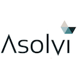

<div class="hero-body">
  <div class="container">
    <br />
    <div class="card">
      <div class="card-content">
        <div class="media">
          <div class="media-left is-hidden-mobile">
            <figure class="image is-128x128">
              
            </figure>
          </div><!-- media-left-->
          <div class="media-content">
            <p class="is-size-4-desktop is-size-5-mobile">
              Full Stack Developer <br />
              <a target="_blank" href="http://www.asolvi.com">Asolvi</a>
            </p>
            <p class="is-size-5-desktop is-size-6-mobile""> Trondheim / Norway (Remote)</p>
                <p class=" is-size-6-desktop is-size-7-mobile">March/2019 - May/2020
            </p>
          </div><!-- media-content-->
        </div><!-- media-->

        <p class="description is-size-6-desktop is-size-7-mobile">
          - Successfully built an Elixir team of 5, by preparing interviews and technical tests to evaluate new
          members.<br /><br />
          - Specified and developed two services from scratch that implement GraphQL APIs in Elixir. On the backend,
          we used Elixir, Ecto and PostgresSQL. On the frontend, we used a mix of vanilla Javascript, VueJS and
          Phoenix
          Liveview. We worked on the whole stack, including architecture, tests, and deployment to Azure
          Cloud using Docker containers and build pipelines that implement multiple checks before deploying to
          production.<br /><br />
          - Worked on porting an old windows application to the cloud using Elixir, Phoenix Liveview, TDS and an old
          MSSQL database. This project started some months ago with an Event Storming Session that happened in
          Trondheim in which we split our domain using DDD. This is an umbrella application where we needed prepare
          the system to plug into multiple different databases, so we implemented a Web App, a general Behavior/API,
          and an example implementation for the MSSQL database.<br /><br />
          - Created a Event Sourcing / CQRS demo and presentation for the whole company. I also worked together with
          a colleague in a cross-team effort to benchmark Eventstore using ArtilleryJS. For that, I needed to deploy
          an Eventstore cluster on Azure Cloud.<br /><br />
          - Tested every piece of code produced with Unit tests, Integrations Tests and E2E tests frameworks like
          Cypress and TestCafé.</p>
        <br />
        <div class="tags">
          <span class="tag is-info">Elixir</span>
          <span class="tag is-info">Phoenix LiveView</span>
          <span class="tag is-info">GraphQL</span>
          <span class="tag is-info">Azure Devops</span>
          <span class="tag is-info">Tests</span>
          <span class="tag is-info">E2E Tests</span>
          <span class="tag is-info">Cypress</span>
          <span class="tag is-info">TestCafé</span>
          <span class="tag is-info">CI/CD</span>
          <span class="tag is-info">Docker</span>
          <span class="tag is-info">VueJS</span>
          <span class="tag is-info">PostgreSQL</span>
          <span class="tag is-info">MSSQL</span>
          <span class="tag is-info">ArtilleryJS</span>
          <span class="tag is-info">ES/CQRS</span>
          <span class="tag is-info">Terraform</span>
        </div>
      </div><!-- card-content-->
    </div><!-- card -->

  </div><!-- container -->
</div><!-- hero-body -->
